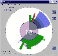

|
|
| 当前位置：电脑报电子版 > 1999 年 > 41 期 > 软件世界 > SCANNER——分析硬盘的利器 |
| 《 SCANNER——分析硬盘的利器 》 |
| 硬盘的使用情况往往不能令人满意，甚至存在着大量浪费的现象，为此我们需要使用专门的软件来对硬盘进行分析，SCANNER就是这样一款小巧、实用的硬盘分析工具。 启动SCANNER之后，程序首先会对当前硬盘进行一个全面的分析，然后会弹出如图所示的窗口，窗口的中间部分是一个很大的饼图，它显示出当前硬盘的使用情况，用户只需将鼠标移动到饼图的某一位置，则该位置所对应的硬盘信息就将会显示在界面的左上方，包括当前位置所对应的磁盘大小、文件数目等。在这个界面上，用户还可以了解当前系统虚拟内存的信息，由于这样的方式非常直观，所以大家能够一目了然。 除了以上这些，界面的右侧还有三个按钮，用它们可以方便地调用一些系统功能： ●Application Wizard，调用Windows系统的安装/卸载功能。 ●Empty Recycle Bin，清空回收站。 ●Update Display，刷新屏幕。 对SCANNER感兴趣的朋友可以从http:∥wwwsteffengerlachde/freeware下载到它的最新版本，大小为180K。 |
| 下载本期推荐软件 | 页 首 |
| 《电脑报》版权所有，电脑报网站编辑部设计制作发布 |